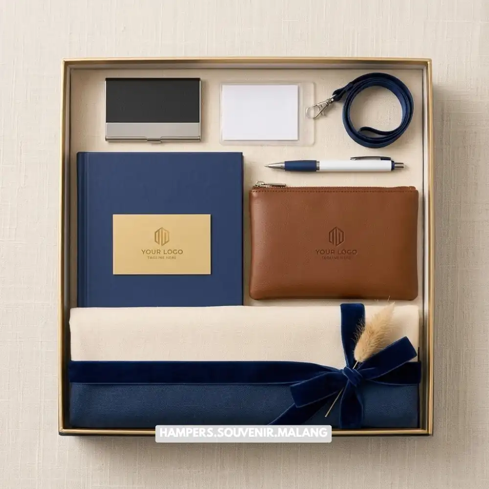

Supplier hampers kantor Malang adalah penyedia jasa dan produk parcel korporat yang membantu perusahaan menghadirkan hampers berkualitas untuk klien, mitra, maupun karyawan. Layanan ini mencakup kurasi produk, personalisasi merek, hingga pengiriman tepat waktu ke area Malang Raya.
- Supplier hampers kantor membantu perusahaan menghemat waktu kurasi dan produksi souvenir.
- Hampers Malang menyediakan kustomisasi logo dan kemasan sesuai identitas brand perusahaan.
- Pemesanan dapat disesuaikan dengan momen tertentu seperti Lebaran, akhir tahun, atau penyambutan mitra bisnis.
- Layanan pengiriman menjangkau area Malang Raya dengan estimasi waktu yang jelas.
- Konsultasi gratis tersedia untuk membantu menentukan paket hampers paling sesuai anggaran.
Banyak perusahaan di Malang mulai menyadari bahwa hampers bukan sekadar formalitas, melainkan bagian dari strategi membangun relasi bisnis jangka panjang. Sebuah hampers yang dikemas rapi dan berisi produk berkualitas dapat memperkuat kesan profesional perusahaan di mata klien maupun mitra kerja. Karena itu, memilih supplier yang tepat menjadi keputusan strategis, bukan sekadar transaksi biasa.
Kebutuhan ini semakin terasa menjelang momen-momen penting seperti pergantian tahun, hari raya keagamaan, hingga acara serah terima proyek. Pada momen tersebut, volume permintaan hampers korporat cenderung meningkat, sehingga perusahaan memerlukan mitra yang dapat diandalkan dari sisi kualitas produk maupun ketepatan waktu pengiriman.
Apa Itu Supplier Hampers Kantor dan Mengapa Perusahaan Membutuhkannya?
Supplier hampers kantor adalah penyedia jasa yang mengurus seluruh proses pembuatan parcel korporat, mulai dari pemilihan produk, penataan, personalisasi merek, hingga distribusi ke penerima. Perusahaan membutuhkan layanan ini agar proses pemberian hampers berjalan efisien tanpa mengganggu operasional harian tim internal.
Tanpa mitra yang tepat, tim internal perusahaan sering kehabisan waktu untuk mengurus detail seperti pemilihan isi, pengemasan, dan pengiriman ke banyak alamat sekaligus. Situasi ini rawan menimbulkan keterlambatan atau hasil akhir yang kurang rapi, padahal hampers mewakili citra perusahaan di mata penerima.
Baca Juga: Hampers Akhir Tahun Kantor Malang untuk Klien
Mengapa Hampers Menjadi Bagian Penting Strategi Korporat?
Hampers berfungsi sebagai representasi apresiasi sekaligus alat membangun hubungan bisnis yang lebih personal. Pemberian hampers yang tepat waktu dan berkualitas dapat meninggalkan kesan positif yang bertahan lama pada klien maupun karyawan.
Di sisi internal, hampers untuk karyawan juga berperan dalam menjaga motivasi dan rasa dihargai. Di sisi eksternal, hampers untuk klien atau mitra bisnis membantu memperkuat loyalitas dan membuka peluang kerja sama lanjutan. Kedua fungsi ini menjadikan hampers sebagai investasi komunikasi, bukan sekadar pengeluaran seremonial.
Bagaimana Cara Memilih Supplier Hampers Kantor yang Tepat di Malang?
Memilih supplier hampers kantor yang tepat berarti mempertimbangkan kualitas produk, fleksibilitas kustomisasi, rekam jejak pengiriman, dan kemudahan komunikasi selama proses pemesanan. Faktor-faktor ini menentukan apakah hasil akhir hampers benar-benar mencerminkan citra profesional perusahaan.
Kualitas produk menjadi pertimbangan utama karena isi hampers akan langsung dinilai oleh penerima. Selain itu, kemampuan supplier untuk menyesuaikan kemasan dengan warna atau logo perusahaan turut memengaruhi kesan personal yang ingin disampaikan.

Faktor Lokasi dan Kecepatan Pengiriman di Wilayah Malang
Faktor lokasi sangat berpengaruh terhadap kecepatan dan keandalan pengiriman hampers kantor. Supplier yang berbasis di Malang umumnya lebih memahami rute distribusi lokal, sehingga risiko keterlambatan dapat ditekan, terutama saat momen ramai seperti akhir tahun atau hari raya.
Pengiriman lintas kota dari luar Malang cenderung membutuhkan waktu tambahan dan biaya logistik yang lebih tinggi. Sebaliknya, supplier lokal seperti Hampers Malang dapat menjangkau area Malang Raya dengan lebih efisien, sekaligus memberikan fleksibilitas jadwal pengambilan atau pengiriman sesuai kebutuhan perusahaan.
Kemampuan Kustomisasi dan Branding
Kemampuan kustomisasi menjadi pembeda utama antara supplier biasa dan supplier yang benar-benar memahami kebutuhan korporat. Personalisasi logo, kartu ucapan, hingga pemilihan warna kemasan membantu hampers terasa lebih eksklusif dan sesuai identitas merek perusahaan.
Perusahaan yang secara konsisten menghadirkan hampers dengan identitas visual yang seragam cenderung lebih mudah dikenali dan diingat oleh klien maupun mitra bisnisnya. Konsistensi ini memperkuat citra profesionalisme dalam jangka panjang.
Apa Saja Jenis Hampers Kantor yang Paling Sering Dipesan Perusahaan?
Jenis hampers kantor yang paling sering dipesan meliputi hampers makanan dan minuman premium, hampers perlengkapan kerja, hampers kesehatan, serta hampers tematik untuk momen khusus seperti Lebaran atau akhir tahun. Setiap jenis memiliki fungsi dan target penerima yang berbeda.
Hampers makanan dan minuman umumnya dipilih untuk klien atau mitra karena bersifat universal dan mudah diterima berbagai kalangan. Sementara itu, hampers perlengkapan kerja seperti alat tulis premium atau produk digital pendukung kerja lebih sering digunakan sebagai apresiasi internal untuk karyawan.
Hampers untuk Momen Khusus Perusahaan
Momen seperti Lebaran, Natal, akhir tahun, atau serah terima proyek biasanya menjadi waktu paling ramai bagi permintaan hampers korporat. Pada momen ini, perusahaan cenderung memesan dalam jumlah besar dengan tema visual yang disesuaikan.
Menjelang momen-momen tersebut, sebaiknya perusahaan melakukan pemesanan lebih awal agar proses kurasi, personalisasi, dan distribusi dapat berjalan tanpa terburu-buru. Pemesanan mendadak berisiko membatasi pilihan produk maupun waktu pengiriman yang tersedia.
Apa Saja Kesalahan Umum yang Perlu Dihindari Saat Memesan Hampers Kantor?
Kesalahan umum yang sering terjadi meliputi pemesanan mendadak tanpa mempertimbangkan waktu produksi, tidak memperhatikan konsistensi kemasan dengan identitas merek, serta kurang memperhitungkan jumlah penerima secara akurat. Ketiga hal ini dapat menurunkan kualitas kesan yang ingin disampaikan.
Pemesanan mendadak sering memaksa perusahaan memilih produk seadanya karena keterbatasan waktu produksi. Selain itu, kemasan yang tidak konsisten dengan identitas visual perusahaan dapat membuat hampers terkesan kurang profesional, meskipun isinya berkualitas baik.
Pentingnya Perencanaan Anggaran yang Realistis
Perencanaan anggaran yang realistis membantu perusahaan menentukan jenis dan jumlah hampers tanpa mengorbankan kualitas. Anggaran yang terlalu ketat berisiko menghasilkan hampers yang kurang mencerminkan citra perusahaan, sementara anggaran yang tidak terencana dapat membebani pengeluaran secara tidak proporsional.
Diskusi awal mengenai kisaran anggaran dengan tim supplier dapat membantu menyusun paket hampers yang seimbang antara kualitas, jumlah, dan nilai investasi perusahaan.
Mengapa Memilih Hampers Malang sebagai Mitra Hampers Kantor Anda?
Hampers Malang hadir sebagai mitra terpercaya bagi perusahaan yang membutuhkan hampers kantor berkualitas dengan proses pemesanan yang mudah dan pengiriman yang dapat diandalkan di wilayah Malang Raya. Layanan ini dirancang untuk memahami kebutuhan korporat, mulai dari personalisasi merek hingga penyesuaian anggaran.
Tim Hampers Malang berpengalaman menangani kebutuhan hampers dalam berbagai skala, baik untuk kebutuhan puluhan maupun ratusan penerima. Pendekatan konsultatif yang diterapkan membantu perusahaan menemukan paket yang paling sesuai tanpa proses yang rumit.
Jika perusahaan Anda sedang mencari supplier hampers kantor Malang yang dapat diandalkan, jangan ragu untuk menghubungi Hampers Malang guna berkonsultasi mengenai kebutuhan hampers korporat Anda. Tim kami siap membantu merancang solusi hampers yang sesuai dengan identitas dan anggaran perusahaan Anda.
Memilih supplier hampers kantor yang tepat di Malang berarti mempertimbangkan kualitas produk, kemampuan kustomisasi, ketepatan waktu pengiriman lokal, dan fleksibilitas anggaran. Perencanaan yang matang serta pemesanan lebih awal, terutama menjelang momen ramai, akan membantu perusahaan mendapatkan hasil hampers yang optimal. Hampers Malang siap menjadi mitra Anda dalam menghadirkan hampers korporat yang elegan dan berkesan.
Tanya Jawab Seputar Supplier Hampers Kantor Malang
Supplier hampers kantor adalah penyedia jasa yang mengurus kurasi, personalisasi, dan distribusi parcel korporat untuk kebutuhan perusahaan, klien, maupun karyawan.
Waktu produksi dapat bervariasi tergantung jumlah dan tingkat personalisasi hampers, sehingga sebaiknya pemesanan dilakukan jauh hari sebelum momen yang diinginkan.
Ya, sebagian besar supplier hampers korporat termasuk Hampers Malang menyediakan opsi personalisasi logo dan kemasan sesuai identitas merek perusahaan.
Hampers Malang melayani pengiriman ke wilayah Malang Raya dengan estimasi waktu yang disesuaikan dengan lokasi dan jumlah pesanan.
Perusahaan dapat menghubungi tim Hampers Malang untuk konsultasi kebutuhan, penentuan paket, hingga proses pemesanan hampers korporat secara langsung.

Butuh Hampers Kantor?
Solusi Hampers & Corporate Gift Kreatif di Malang Raya.
Ditulis oleh Tim Maroon Souvenir
Sahabat mahasiswa dan pelaku bisnis di Malang Raya. Berpengalaman menangani merchandise event kampus, instansi pemerintahan, dan hotel berbintang di Batu.